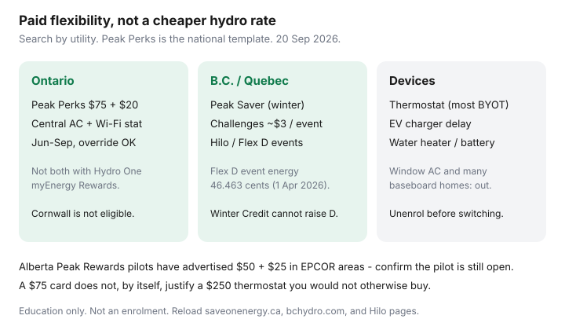

Utilities · Canada
Demand response and peak saver programs across Canada: how households get paid to flex load

Canadian utilities will pay a household to nudge a thermostat, delay an EV charger, or sit out a water-heater element for a few peak hours — and most people never hear the offer because it lives on a different website in every province. Demand response is not a cheaper hydro rate. It is a small credit for flexibility.
Ontario Peak Perks is the clearest national example, so start there if you have central AC. The deeper program page is Peak Perks. This article is the Canada-wide discovery framework: what to search, which devices enrol, and how not to join two programs that forbid each other.
Key takeaways
- Demand response (DR) pays you to let the utility (or a program operator) make a short, reversible load change when the grid is stressed. Your TOU / Rate D / BC Hydro ¢ usually does not change.
- Ontario Peak Perks (Save on Energy, as of 20 Sep 2026): $75 enrolment + $20/year, central AC or a heat pump that is part of that AC, eligible Wi-Fi stat. Not both with Hydro One myEnergy Rewards. Cornwall is out.
- Search by utility, not “Canada rebate”: BC Hydro Peak Saver (winter events; device bonuses and ~$3 challenges), Hydro-Québec Hilo / Flex D / Winter Credit, Alberta Peak Rewards pilots (EPCOR-area thermostat stream: $50 + up to $25 — confirm with the utility).
- Thermostats, some water heaters, EV chargers, and batteries are the household DR devices. Window AC and baseboard-only homes are often ineligible for AC-summer programs.
- Override is usually allowed. Comfort-vulnerable households should treat override as a feature, not a failure.
What demand response is in plain language
The grid’s expensive problem is a few hundred hours a year: a July afternoon of air conditioners, or a January morning of baseboards and kettles. Building a power plant for those hours is costly.
Paying you to pre-cool, then raise the setpoint 2°C for three hours, is cheaper. You keep the same rate plan. You get a prepaid card, a bill credit, or a cheaper Flex-style tariff if you can shed the event.
DR is not equal billing, not a retailer contract, and not “the utility owns your furnace.” You can almost always opt out of a single event. Chronic opt-outs are how you collect a credit and donate nothing — legal, a bit beside the point, and a reason not to fear enrolment if someone is heat- or cold-vulnerable.

Ontario Peak Perks as the clearest national example
Independent Electricity System Operator / Save on Energy. Availability window on the program requirements: 1 June–30 September, weekdays, events at most three hours. Typical behaviour: optional ~1°C pre-cool, then up to +2°C. Credits on the page cited here, as of 20 Sep 2026: $75 virtual prepaid Mastercard on enrolment (within 60 days of acceptance) and $20 each year you stay. A replacement thermostat does not pay a second $75.
You need Ontario residential (or small-business) electricity, central AC, an eligible Wi-Fi thermostat, and no overlapping provincial DR program. Hydro One customers choose Peak Perks or myEnergy Rewards. Window units and baseboard-only homes are not the product. Full eligibility and the override how-to sit on the Peak Perks companion.
Other utility BYOT / peak programs to search by province
| Where | What to search | Household shape (confirm with your utility) |
|---|---|---|
| Ontario | Peak Perks; Hydro One myEnergy Rewards; Enbridge Sarnia Saves (narrow) | $75 + $20; central AC; pick one overlapping program |
| B.C. (BC Hydro) | Peak Saver — challenges and “enrol smart devices” | Winter season (Nov–Mar). Challenges ~$3/event if you hit the target. Device path: enrolment bonus (page language: up to $500) plus seasonal rewards ($50 per most device types; $250 batteries). E-Plus accounts excluded. |
| Québec | Hilo; Rate Flex D; Winter Credit Option | Winter peak events (Dec–Mar; Hilo describes up to 30, often 6–10 a.m. and/or 4–8 p.m.). Flex D event ¢ is 46.463 (1 Apr 2026). Winter Credit cannot raise a Rate D bill. |
| Alberta | Peak Rewards / utility or AEEA pilots; retailer “peak” add-ons | EPCOR-area thermostat pilot advertised $50 enrolment + up to $25 retention — postal-code gated. Confirm if the pilot is still open. |
| Atlantic / Prairies / municipal | “peak saver,” “bring your own thermostat,” “load flex,” “interruptible” | Fragmented. Start on your wires company’s residential programs page, not a national blog. |
FortisBC, municipal utilities, and co-ops are not BC Hydro. Cornwall, Ontario, sits on the Hydro-Québec grid and is out of Peak Perks. If the salesperson cannot name the program URL, they are selling a thermostat.
Thermostats, water heaters, and EV chargers as DR devices
- Wi-Fi thermostat on central AC or a heat pump — the Peak Perks / most BYOT product.
- Line-voltage baseboard stats — relevant to Hilo / some Québec and B.C. device lists; not Peak Perks.
- EV charger — delay or pause a session for a few hours. Pairs with Ontario ULO overnight charging; do not confuse a DR event with the 3.9 ¢ window.
- Tank water heater (control switch or CTA-2045-class device where offered) — the tank is a thermal battery. Confirm a mixing valve / scald conversation with the installer.
- Home battery — BC Hydro Peak Saver lists batteries with a larger seasonal credit. That is a capital file, not a $75 card.
An energy monitor (Sense, a utility in-home display, Green Button) helps you see an event. It is not usually the enrolment device.
How do you evaluate credits vs comfort interruptions?
Worksheet: (enrolment credit + expected annual credit) versus (device cost you would not otherwise buy) plus (hours you refuse to be 2°C warmer or cooler). If you already own an eligible stat, the math is “ten minutes and a login.” If you must buy a $250 device for a $75 card, the card is a partial offset — buy the stat only if you also want a schedule (see worth-it math).
Flex D in Québec is a different bet: you pay 46.463 ¢ during events in exchange for cheaper ¢ the rest of winter. That is not a prepaid card. Households that cannot shed load should stay on Rate D or Winter Credit. Walk Rate D in the Rate D guide.
Avoiding double-enrolment conflicts
Two programs that auto-adjust the same thermostat for the same grid usually forbid each other. Documented pair: Peak Perks and Hydro One myEnergy Rewards. Peak Perks also excludes “another Ontario residential DR program that auto-adjusts the thermostat,” with a noted Sarnia Saves exception. BC Hydro Peak Saver and a retailer app that also wants exclusive control can collide — ask both in writing.
Sequence: pick the live credit you can actually collect, unenrol from the other, wait for confirmation, then enrol. Do not assume a manufacturer “works with two utilities” toggle overrides the program terms. Rebate-before-you-buy still applies — utility thermostat rebates are a purchase incentive, not a DR credit.
Sources
- Save on Energy, Peak Perks — $75 / $20; eligibility; Cornwall exclusion (as of 20 Sep 2026).
- Hydro One, myEnergy Rewards FAQ — cannot stack with Peak Perks.
- BC Hydro, Peak Saver and enrol-smart-devices pages — winter season; challenges; device bonuses (confirm current amounts with BC Hydro).
- Hydro-Québec / Hilo — Flex D event hours and 1 Apr 2026 event ¢ in the Rate D companion.
- Alberta Energy Efficiency Alliance Peak Rewards thermostat pages — pilot credits; confirm whether enrolment is open.
Frequently asked questions
Is demand response a cheaper hydro rate?
Usually not. You keep your TOU, Rate D, or BC Hydro plan. The utility pays a card or bill credit for a short, reversible load change. Flex D in Québec is the exception — event ¢ is higher.
What is the easiest Canadian example?
Ontario Peak Perks: $75 to enrol and $20 a year if you stay (as of 20 Sep 2026), central AC, eligible Wi-Fi thermostat. Not both with Hydro One myEnergy Rewards.
Can I enrol a window air conditioner or baseboards?
Peak Perks: no. Some Québec and B.C. device lists include line-voltage stats or EV chargers. Read the live device table, not a national brochure.
What if I am too hot or too cold during an event?
Override on the thermostat or in the app. You usually stay enrolled. Comfort-vulnerable households should treat override as a feature.
Can I join two programs at once?
Often no. Peak Perks and Hydro One myEnergy Rewards forbid each other. Unenrol, wait for confirmation, then enrol in the one you want.
Researched and drafted with AI assistance and fact-checked against official Canadian sources. How we create content.
Disclosure: Smart thermostats and home energy monitors are offer types. Saving Optimizer may earn a commission if we later add partner links. We do not currently claim thermostat-brand, IESO, BC Hydro, Hydro-Québec, or Hilo partnerships. Credits and eligible models change — re-check the live program page before you buy a device.